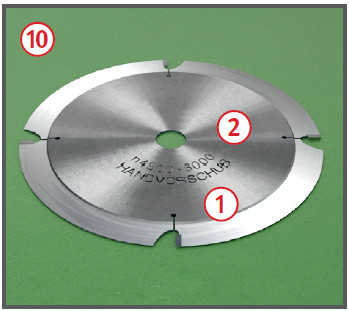

Es kann zu Verletzungen durch Rückschlag des Werkstückes und zu einer Schädigung des Gehörs kommen.
Es kann zu Schnittverletzungen kommen.
Schutzmaßnahmen
Betriebsanleitung des Herstellers beachten.
Unterweisung anhand der Betriebsanweisung.
Gehörschutz und Sicherheitsschuhe benutzen. Lärmbereiche kennzeichnen.
Eng anliegende Kleidung tragen.
Nur mit "Handvorschub", "BG-TEST" bzw. "MAN" gekennzeichnete Werkzeuge mit Schneidenüberstand von max. 1,1 mm verwenden .
Die auf dem Fräswerkzeug
angegebene höchstzulässige
Drehzahl oder der angegebene
Drehzahlbereich darf nicht
überschritten werden.
Bei angegebenem Drehzahlbereich darf die untere Drehzahlgrenze
nicht unterschritten
werden .
Einstellarbeiten nur bei Werkzeugstillstand
mit Messwinkel oder Messuhr durchführen.
Auf scharfe Werkzeuge und saubere, fettfreie Spannflächen achten.
Maschine nur mit wirksamer
Absaugung betreiben .
Beim Fräsen geschweifter oder kurzer Werkstücke mit Anlaufring oder Bogenfräsanschlag spezielle Absaughaube verwenden.
Splitter, Späne und Abfälle
nicht mit der Hand aus dem Gefahrbereich entfernen.
Beim Werkstückvorschub
Hände flach auf das Werkstück
legen, Finger nicht spreizen.
Auch bei kurzer Unterbrechung
Maschine abschalten.
Vor Reinigungs- und Wartungsarbeiten Maschine gegen unbeabsichtigtes Einschalten sichern.
Zusätzliche Hinweise für Tischfräsmaschinen
Drehzahl nach Werkzeug und Arbeitsgang wählen.

Fräswerkzeug möglichst tief einspannen.
Bei Maschinen mit Rechts-/Linkslauf vor Aufsetzen der Fräsdornmutter Verdrehsicherung einsetzen.
Fräserdorne mit Oberlagerzapfen nur mit Oberlager benutzen.
Tischöffnungen durch Einlegeringe dem Werkzeugdurchmesser anpassen.
Fräswerkzeug vor dem Anschlag
verdecken .
Hintere und obere Werkzeugverdeckung
schließen .
Fräsanschlaghälften so dicht
wie möglich an das Werkzeug
heranstellen und sicher befestigen .
Bei Bearbeitung kurzer Werkstücke
Anschlaghälften überbrücken.
Hilfseinrichtungen benutzen:
Schutzkasten mit Winkelbrett
für Schlitz- und Zapfenschneidarbeiten,
Druckkämme und Tischverlängerungen für das Fräsen langer Werkstücke.
Werkzeugverdeckung entsprechend der Werkstückhöhe anbringen. Faustregel: Abstand zum Schneidenflugkreis gleich Werkstückdicke, mindestens jedoch 15 mm.
Das Arbeiten mit dem Vorschubapparat ist auch „Handvorschub“.
Vorschubapparat leicht
gegen Vorschubrichtung geneigt
einstellen (Neigung ca. 5°).
Öffnung zum Anschlag möglichst
gering halten.
Beim Einsetzfräsen den Werkstückabmessungen
angepasste Rückschlagsicherung verwenden . Für kurze Werkstücke zusätzlich Spannlade benutzen.
Beim Fräsen schmaler Querseiten Werkstück nur mit Schiebeholz zuführen. Lange Werkstücke gegen Kippen sichern.
Werkstücke mit kleinem Querschnitt nur mit Zuführlade bearbeiten.
Zum Fräsen schmaler Nuten
Nutfräser verwenden (keine Kreissägeblätter).
Beim Probefräsen nie ohne Schutzvorrichtung arbeiten.
Nur geeignete Werkzeuge verwenden,
die mit der Aufschrift
„MAN“ bzw. „Handvorschub“
und ggf. mit dem „BG-TEST“-Prüfzeichen gekennzeichnet sind.
Zusätzliche Hinweise für Handfräsmaschinen
Werkstück gegen Verschieben
sichern.
Hilfsanschläge zur sicheren
Maschinenführung benutzen.
Arbeitsmedizinische Vorsorge
Arbeitsmedizinische Vorsorge
nach Ergebnis der Gefährdungsbeurteilung
veranlassen (Pflichtvorsorge)
oder anbieten (Angebotsvorsorge).
Hierzu Beratung
durch den Betriebsarzt.
Beschäftigungsbeschränkungen
Jugendliche über 15 Jahre
dürfen nur unter Aufsicht eines Fachkundigen und wenn es die
Berufsausbildung erfordert an
Fräsmaschinen arbeiten.
Jugendliche unter 15 Jahre
dürfen nicht an den Maschinen beschäftigt werden.